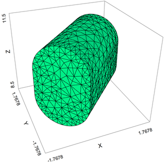

|
Surface-Generating Functions |

  
|
|
Surface-Generating Functions |
|
FlexPDE version 6 includes three surface-generation functions (PLANE, CYLINDER and SPHERE) to simplify the construction of 3D domains (See Surface Functions in the Problem Descriptor Reference)
With the SPHERE command, for example, we could modify the Zsphere definition above as
{ shape of hemispherical cap: }
Zsphere = SPHERE( (0,0,0), R)
We can also build a duct with cylindrical top and bottom surfaces using the following script fragments:
DEFINITIONS
R0 = 1 { cylinder radius }
Len = 3 { cylinder length }
theta = 45 { axis direction in degrees }
c = cos(theta degrees) { direction cosines of the axis direction }
s = sin(theta degrees)
x0 = -(len/2)*c { beginning point of the cylinder axis }
y0 = -(len/2)*s
zoff = 10 { a z-direction offset for the entire figure }
{ The cylinder function constructs the top surface of a cylinder with azis along z=0.5. The positive and negative values of this surface will be separated by a distance of one unit at the diameter. }
zs = CYLINDER((x0,y0,0.5), (x0+Len*c,y0+Len*s, 0.5), R0)
EXTRUSION
SURFACE z = zoff-zs { the bottom half-surface }
SURFACE z = zoff+zs { the top half-surface }
BOUNDARIES
REGION 1
START (x0,y0)
LINE TO (x0+R0*c,y0-R0*s)
TO (x0+Len*c+R0*c,y0+Len*s-R0*s)
TO (x0+Len*c-R0*c,y0+Len*s+R0*s)
TO (x0-R0*c,y0+R0*s)
TO CLOSE
The constructed figure looks like this:

See the example problem "Samples | Usage | 3D_Domains | 3D_Cylspec.pde" for the complete cylinder script.